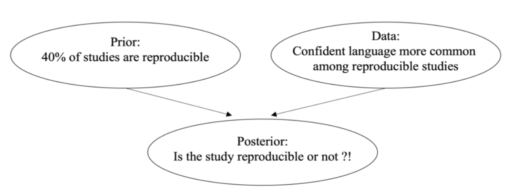

Part 2: 单一事件的贝叶斯模型#
思考：
当你读文献时，是否有一个疑问：
我看到的这个文章靠谱吗？
1、心理学研究的可重复性问题#
1.1 2015年的一项研究
2015年，开放科学合作组织（Open Science Collaboration）在《Science》杂志上发表文章，发现只有36% ~ 47%的认知/社会心理学研究成果能被成功重复。
问题1：当你在知道这个可重复性比例之前和之后，对这个可重复问题的信念是否发生了变化？
1.2 2024年的一项新研究
2024年，一项针对299项预注册的重复实验数据的研究发现，可重复研究通常以自信、透明和确切的语言撰写，而不可重复的研究则往往表现出模糊性，并使用“边缘型”的说服技巧。
这个新研究可能帮助我们更新了对心理学科学论文的预测。
问题2：假定我们现在从上述299个文章中抽取出一篇论文，我们如何评估它的可重复性？
1.3 整合两项研究给出的信息——证据更新
根据Herzenstein等（2024）的研究结果，可重复的研究中，有56%的文章使用确切的语言风格；在不可重复的研究中，使用确切语言的比例为45%。
整合2015和2024年的研究，我们可以得到以下几个关键信息：
心理学研究可重复的概率为40%
心理学研究不可重复的概率为60%
可重复的研究中，使用确切语言的概率为56%
不可重复的研究中，使用确切语言的概率为45%
因此，根据上述所有信息，我们可以进行以下运算并对其可视化：
研究可重复且使用确切语言的概率 \( P = 0.40 × 0.56 = 0.224 \)
研究可重复但不使用确切语言的概率 \( P = 0.40×（1-0.56）=0.176 \)
研究不可重复但使用确切语言的概率 \( P = 0.60 × 0.45 = 0.27 \)
研究不可重复且不使用确切语言的概率 \( P = 0.60 × （1-0.45）=0.33 \)
因此，假如我们抽取一个文章使用了确切的语言风格，我们认为它可重复的可能性是： \(P = 0.224/（0.224 + 0.27） = 0.453\)
2、基本概念介绍与代码实操#
在这个简单的例子当中，我们实际进行了一次“贝叶斯的证据更新”
接下来我们再来重新审视一下这个事例。
我们选取Herzenstein 等（2024）年的部分真实数据进行探索，包括研究的编号 (title)，文章是否可被重复 (replicated), 文章结果描述的确切性 (certain)和文章表述的积极性 (posemo)。
需要事先安装的包以及版本号：
In [1]:
# 非选课的同学，可以使用和鲸社区的Python镜像，运行以下的代码安装必要的模块，需要3-5分钟的时间完成加载
# 后续会有专门的社区公开镜像，给大家提前配置好运行环境
# 将下列代码行解除注释，删除“#”，运行即可：
# !conda install -y graphviz bambi=0.13.0 pymc=5.16.2 PreliZ=0.9.0 ipympl=0.9.4 pingouin=0.5.4
# docker部署和使用教程链接：https://zhuanlan.zhihu.com/p/719739087
# docker pull hcp4715/pybaysian:latest
# docker run -it --rm -p 8888:8888 hcp4715/pybaysian:latest
In [2]:
# 导入数据加载和处理包：pandas
import pandas as pd
# 导入数字和向量处理包：numpy
import numpy as np
# 导入基本绘图工具：matplotlib
import matplotlib.pyplot as plt
# 使用 pandas 导入示例数据
try:
df = pd.read_csv("/home/mw/input/bayes3797/replicated_language_cleaned.csv")
except:
df= pd.read_csv('data/replicated_language_cleaned.csv')
df = df.drop('study_name', axis=1)
df.head()
# 设置APA 7的画图样式
plt.rcParams.update({
'figure.figsize': (4, 3), # 设置画布大小
'font.size': 12, # 设置字体大小
'axes.titlesize': 12, # 标题字体大小
'axes.labelsize': 12, # 轴标签字体大小
'xtick.labelsize': 12, # x轴刻度字体大小
'ytick.labelsize': 12, # y轴刻度字体大小
'lines.linewidth': 1, # 线宽
'axes.linewidth': 1, # 轴线宽度
'axes.edgecolor': 'black', # 设置轴线颜色为黑色
'axes.facecolor': 'white', # 轴背景颜色（白色）
'xtick.direction': 'in', # x轴刻度线向内
'ytick.direction': 'out', # y轴刻度线向内和向外
'xtick.major.size': 6, # x轴主刻度线长度
'ytick.major.size': 6, # y轴主刻度线长度
'xtick.minor.size': 4, # x轴次刻度线长度（如果启用次刻度线）
'ytick.minor.size': 4, # y轴次刻度线长度（如果启用次刻度线）
'xtick.major.width': 1, # x轴主刻度线宽度
'ytick.major.width': 1, # y轴主刻度线宽度
'xtick.minor.width': 0.5, # x轴次刻度线宽度（如果启用次刻度线）
'ytick.minor.width': 0.5, # y轴次刻度线宽度（如果启用次刻度线）
'ytick.labelleft': True, # y轴标签左侧显示
'ytick.labelright': False # 禁用y轴标签右侧显示
})
df.head()
2.1 先验（prior）与数据（data）
重新回顾我们要评估的事件：我们认为从299项心理学研究中随机选出来的一项研究的可重复性如何？
在评估这个事件之前，我们知道Science于2015年发表了一个大规模重复实验，发现40%的心理学研究是可以被重复出来。
对于这299项研究，它们有不同的语言风格：
In [3]:
# 数据预处理
# 计算 'certain' 列的中位数
median_certain = df['certain'].median()
# 创建新列，编码规则：大于中位数为 1，小于等于中位数为 2
df['language_style'] = df['certain'].apply(lambda x: 1 if x > median_certain else 2)
# 输出结果
df.head()
研究能否被重复出来，与他们的语言风格有关系：
有 56%（71/126）的能被重复的研究使用了确切的语言风格；
约 45%（78/173）的不能被重复研究使用了确切的语言风格。
In [4]:
# 计算不同水平的数量和百分比
level_counts = df['replicated'].value_counts()
level_percentages = df['replicated'].value_counts(normalize=True) * 100
# 百分比保留两位小数
level_percentages = level_percentages.round(2)
# 创建一个新的 DataFrame 合并结果
result_df1 = pd.DataFrame({'数量': level_counts, '百分比': level_percentages})
# 展示结果(0代表不可重复，1代表可重复)
result_df1
In [5]:
# 计算不同水平的数量
result_df2 = df.groupby(['replicated', 'language_style']).size().unstack()
# 结果
result_df2
所以，什么是先验？
先验（prior）：指没有观察到具体数据之前，根据已有知识、经验或主观判断对某个事件发生概率的初步估计。
在我们这个事件中，我们评估某项研究可重复性之前，我们关于研究可重复性的信念，在贝叶斯统计中被称为 先验（prior）。
假设我们的信念被2015年Science的文章所影响，相信约40%的心理学实验是可重复的，这就是我们开始了解这项研究前的信念。
本例中，40%的估计代表了我们基于已有文献和领域经验的先验信念——即在没有观察具体文章之前，推测它有40%的研究能够成功重复。
先验 vs 数据
在了解到被评估的研究来自Herzenstein 等（2024）之后，我们又获得了新的信息，这个新信息我们将其称为 数据（data）。
此时，我们会有两个信息：
先验信息 (prior)：约 40% 的研究是可重复。
数据 (data) ：有 56%能被重复的研究使用了确切的语言风格，约45%不能被重复研究使用了确切的语言风格。
那么请思考一个问题：我们该如何推断？是在先验和数据之间找到平衡吗？
如果你也这么想，那么恭喜你，这正是贝叶斯的思路：
基于数据对先验进行更新。
\( Posterior=\frac {data*prior} {Average \ probability \ of \ data} \)
2.2 先验概率（Prior probability）
我们现在使用更加正式一点的语言来对上述的信息进行描述：
假如一项心理学研究能够被其他研究者独立地重复出来，我们认为一个特定的事件发生了
————我们将这个事件使用B来表示
假如一项心理学研究不能被其他研究者独立地重复出来，我们认为一个特定的事件没有发生
————我们使用符号\( B^c \)(B的补集complement)来表示
根据Science于2015年的文章，我们可以得以下公式：
事件 |
\( B \) |
\( B^c \) |
\( Total \) |
|---|---|---|---|
probability |
0.4 |
0.6 |
1 |
换一句话说，在我们对需要被评估的研究进行评估前，我们关于事件 B 的先验信念是 \(P(B)\)，这也被称为先验模型(prior model)
作为一个有效的概率模型(valid probability model)，它必须：
（1）考虑所有可能的事件（所有文章都必须是可重复或不可重复的，没有其他可能性）
（2）它为每个事件分配先验概率
（3）这些概率加起来为1
2.3 数据模型（条件概率与似然性）
借鉴先验模型的构建方式，我们同样可以采用模型（即公式）对关于目标研究的新信息进行正式地描述。
————我们用符号A表示研究中使用了确切的语言风格。
我们要将如下一句话的信息进行形式化：
有 56%能被重复的研究使用了确切的语言风格；约45%不能被重复研究使用了确切的语言风格。
有 56%能被重复的研究使用了确切的语言风格，44%的能被重复的研究没有使用确切的语言风格；约45%不能被重复研究使用了确切的语言风格；55%的不能被重复的研究没有使用确切的语言风格。
将数据形式化，通过条件概率来量化文章展现出语言确切的可能性。具体如下：
当研究是可重复的，使用确切语言的概率大约为56%。 \( P（A|B） \)≈ 56%
当研究不可重复的情况下，使用确切语言的概率大约为45%。 \( P（A|B^c） \)≈ 45%
2.3.1 条件概率
条件概率：给定某个条件下发生另一件事情的概率。
注意：条件概率的定义是有顺序的，\( P(A|B) \)与\( P(B|A) \)并不相等。
例如：
\( P(A|B) \)表示在研究可重复的情况下，使用确切语言的概率（B是前提，A是结果）
\( P(B|A) \)表示的是在研究使用确切语言的情况下，该研究是可重复的概率（A是前提，B是结果）
很多时候，人们容易混淆这两者，尤其在贝叶斯推理中。因此，清楚条件的前提和结果是很重要的。
2.3.2 似然（likelihood）
从条件概率中，我们知道 \( P（A|B）= 0.56 \), \( P（A|B^c） \)= 0.45，即使用确切语言的研究更可能是可重复的。
似然（likelihood）：描述的是在不同假设下，某个数据模式出现的可能性。
在这个例子中，我们比较两种假设：
\( P（A|B） \)= 0.56：在可重复研究的假设下，使用确切语言的概率较高。
\( P（A|B^c） \)= 0.45：在不可重复研究的假设下，使用确切语言的概率较低。
因此，似然函数表明：当前数据模式（使用确切语言）在可重复的假设下更可能出现： \( P（A|B） \)= 0.56 > \( P（A|B^c） \)= 0.45
这就是似然函数(likelihood function)的核心：反映了在不同的假设（可重复或不可重复）下，某个数据 A 出现的可能性。
例如，针对“数据A：研究使用确切语言”的似然可以写成：\( L(*|A) \)
\( L(B|A) = P(A|B) \) \( L(B^c|A) = P(A|B^c) \)
上述两个式子分别表示在“研究可重复”和“研究不可重复”两种可能的情况下，使用确切语言的概率。
注意，在似然函数中，数据是已知发生的，而假设是可能发生的。
概率(Probability) vs 似然(likelihood)
概率和似然似乎都在表示某种可能性，它们的区别是什么呢？
特性 |
概率 (Probability) |
似然 (Likelihood) |
|---|---|---|
定义 |
已知假设条件，得到某个数据的可能性 |
已知数据，不同假设条件下得到该数据的可能性 |
范围 |
[0, 1] |
不限于[0, 1] |
总和 |
所有可能事件的总和为1 |
可以不等于1 |
应用 |
预测和决策 |
模型估计和选择 |
注意：
先验概率的总和等于1，因为先验表示所有可能结果的分布，表示事件B发生的概率，是我们的主观推测
似然总和不等于1，因为似然函数不是概率函数，它告诉我们事件A在不同假设下发生的相对可能性。
根据我们的例子，概率和似然可以整理为下表：
event |
\( B \) |
\( B^c \) |
\( total \) |
|---|---|---|---|
prior |
0.4 |
0.6 |
1 |
likelihood |
0.56 |
0.45 |
≠1 |
2.4 分母（normalizing constant）– 边际概率 (marginal probability)
似然函数描述了在可重复性研究和不可重复研究中使用确切语言的情况。
我们想知道的是：所有研究中使用自信语言的总体可能性是多少，这被称为边际概率 \( P(A) \)
我们要做的，就是把每个假设下出现事件 A 的似然与每个假设本身的概率相乘（即把每个假设自身的概念纳入考虑），这两者之和即为边际概率。
\( P(A)=P(A \bigcap B)+P(A \bigcap B^c)=L(B|A)*P(B)+L(B^c|A)*P(B^c) \)
\( P(A)=0.56*0.4+0.45*0.6=0.494 \)
2.5 后验概率模型 (Posterior probability model via Bayes’ Rule)
直觉理解
最后，我们来计算后事件 B 的后验概率，即，当我们知道某个研究使用了确切的语言风格之后，它能被重复的可能性是多少？
我们同样通过条件概率来描述它： \( P(B|A) \)。
在正式计算之前，我们可以回顾一下这个表格来建立一些直觉。
\( B \) |
\( B^c \) |
\( Total \) |
|
|---|---|---|---|
\( A \) |
0.56 * 0.4 = 0.224 |
0.45* 0.6 = 0.27 |
0.494 |
\( A^c \) |
0.176 |
0.33 |
0.506 |
\( Total \) |
0.4 |
0.6 |
1.0 |
\( A \)：表示使用确切语言的研究
\( A^c \)：表示不使用确切语言的研究
\( B \)：表示研究是可重复的
\( B^c \)：表示研究是不可重复的
因为我们知道这项研究使用确切语言风格，所以我们直接锁定第一行，
在A行中，45.3%(0.224/0.494)的研究是可重复的，54.7%(0.27/0.494)的研究是不可重复的。
因此，根据后验概率 45.3%的可能性可以认为当前这一研究是可重复的。
正式计算
如何凭借贝叶斯公式的数学形式推导得到该结果？ \( Posterior \thicksim P(B|A)=\frac {data*prior} {Average \ probability \ of \ data}=\frac {P(A\bigcap B)} {P(A)}=\frac {L(B|A)*P(B)} {L(B|A)*P(B)+L(B^c|A)*P(B^c)} \)
\( P(B|A)=\frac {P(B)L(B|A)} {P(A)}=\frac {0.4*0.56} {0.494}=0.453 \)
当带入之前计算得到的数值到贝叶斯公式中，我们得到了确切语言为可重复研究的概率。
使用同样的方法，我们可以计算出使用确切语言的研究为不可重复研究的概率，结果如下表
可以注意到：先验概率和后验概率的和均等于1
event |
\( B \) |
\( B^c \) |
\( Total \) |
|---|---|---|---|
prior probability |
0.4 |
0.6 |
1 |
posterior probability |
0.453 |
0.547 |
1 |
思考时间：是否加入分母的意义何在？
后验概率计算模拟练习
为了深入理解先验知识、似然（数据）和后验概率，我们将通过编写代码来计算后验概率，以增强对这些概念的理解和实践能力。
1、定义研究的可重复性与相应的先验概率
In [6]:
# 定义文章类型
article = pd.DataFrame({'replicated': ['yes', 'no']})
# 定义先验概率
prior = [0.4, 0.6]
2、模拟一些可能被投放给你的研究
In [7]:
# 模拟生成 10000 项研究，包括其类型
np.random.seed(84735)
article_sim = article.sample(n=10000, weights=prior, replace=True)
# 查看前 10 行数据
article_sim.head(10)

In [8]:
#我们可以通过画图来查看这些被投放研究的可重复性比例。
article_sim['replicated'].value_counts().plot.bar()
plt.xticks(rotation=0)
plt.show()
3、接下来，我们需要模拟10000项研究使用确切语言风格的情况
和之前相同，不可重复研究使用确切语言风格的可能性为45%，可重复研究使用确切语言风格的可能性为56%。
In [9]:
# 设置条件概率
article_sim['data_model'] = np.where(article_sim['replicated'] == 'no', 0.45, 0.56)
# 定义研究是否使用确切语言
data = ['certain', 'uncertain']
# 设置随机种子，以便得到重复的结果
rng=np.random.default_rng(84735)
# 生成确切语言相关的数据
article_sim['language'] = article_sim.apply(lambda x: rng.choice(data, 1, p = [x.data_model, 1-x.data_model])[0], axis=1)
In [10]:
# 显示每个类别研究数量
(
article_sim.groupby(['language', 'replicated'])
.size()
.unstack(fill_value=0)
)
language / replicated |
no |
yes |
|---|---|---|
certain |
2643 |
2340 |
uncertain |
3330 |
1687 |
4、计算后验值 还记得我们的先验概率为：
可重复研究 \( P(B) \)=0.4
不可重复性研究 \( P(B^c) \)=0.6
由以上结果可计算似然：
大约58.1%(2340/(2340+1687))的可重复性研究使用了确切语言, \( P(A|B) \) = 0.581
44.2%的不可重复性研究使用确切语言(2643/(3330+2643)), \( P(A|B^c) \) = 0.442
结合先验和似然，我们可以进一步计算分母(边际概率)：
\( L(B|A)×P(B) + L(B^c|A)×P(B^c) = 0.581×0.4 + 0.442×0.6 = 0.2324 + 0.2652 ≈ 0.498 \)
最后，我们可以计算得到的后验（使用确切语言研究中，可重复性研究的概率）：
\( P(B|A) = L(B|A)×P(B) / P(A) = (0.581×0.4) / 0.498 ≈ 0.467 \)
在10000项研究中，使用确切语言的研究有4980篇(分母)
而现在，我们可以知道，在使用确切语言的研究中，47%(2340/4980)的研究为可重复研究
In [11]:
usage_yes = article_sim[article_sim['language'] == 'certain']
print('使用确切语言的研究', usage_yes['replicated'].value_counts().sum())
usage_yes['replicated'].value_counts()
同样地，通过画图来可视化使用确切语言的研究的情况:
In [12]:
# 定义两幅图的坐标
fig, axes = plt.subplots(1, 2, figsize=(10, 5))
# 绘制两幅图
for i, u in enumerate(article_sim['language'].unique()):
ax = axes[i]
data = article_sim[article_sim['language'] == u]
ax.bar(data['replicated'].unique(), data['replicated'].value_counts())
ax.set_title(f'language = {u}')
ax.set_ylim(0, 10000)
# 显示
fig.tight_layout()
plt.show()
总结 (Recap)
回到之前的问题：如何预测研究的可重复性？
尝试回答：
哪些信念可以作为先验概率？
信息的哪些属性可以作为数据？
如何结合先验和数据更新信念 (贝叶斯公式)？